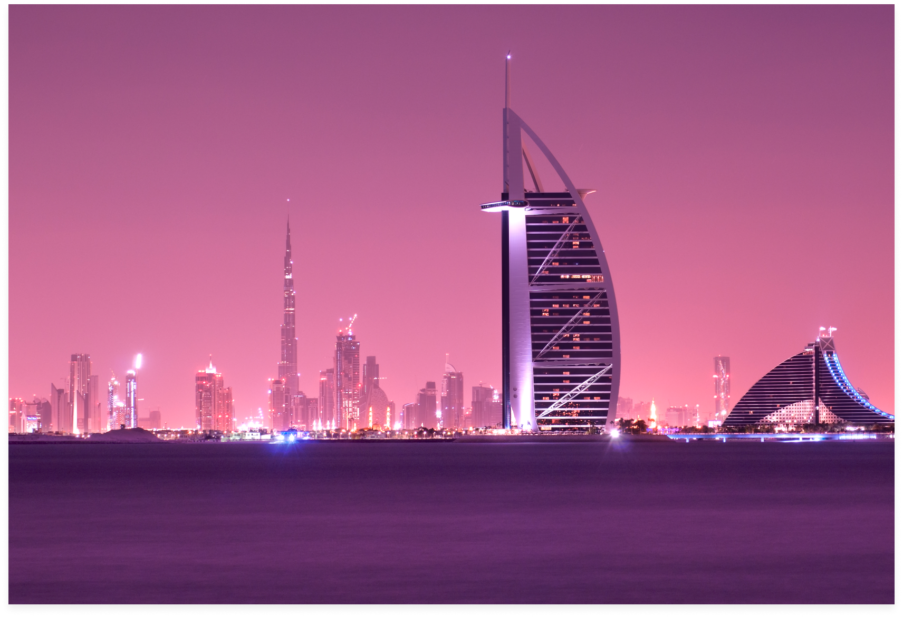

Featured Article
'Will we ever make it back?' Returning home to grieve following COVID-19 loss
Marco Ferrarese Lonely Planet Writer about 12 hours ago
Upon learning that both his parents had passed away in Italy due to COVID-19 complications, writer Marco Ferrarese attempts to make his way back home from Peru, travelling halfway across the world to say goodbye. But the road home is long, and getting there isn't easy.
"You must be the Italian."
Towering from the pedestal of his Segway-powered authority, a Malay policeman almost half my age singles me out and zooms over to my side. I flip my spouse visa at him, my golden ticket to a safe onward passage, and keep following the single file of Malaysians onto a bus. Etched on alternate seats, yellow crosses of duct tape reinforce the new global mantra of social distancing. They drop us off at Immigration, where humans in white coveralls and respiratory masks wait for us to pass through a thermal scanner before registering our arrival and handing out sinister-looking health forms.
Welcome to the Great Pandemic 19, where international travel has become a Machiavellian circus of endurance. Unlike the old world, this new travel dystopia boasts expensive flights, authorities who scan your every move, borders as impenetrable as medieval chastity belts, and unsettling security measures. But you gotta be patient if you want to go home.

Today’s the day
“Will we ever make it back home?”
I really want to. COVID-19 came upon me like a Texas chainsaw massacre in the groin: first, it ripped my mother’s lungs to shreds on 20 March while I was trapped with my Malaysian wife in a small Peruvian mountain town. On 23 March, because he loved her beyond words, even my father Maurizio went knocking on heaven’s door.
But going home isn't easy. Officials from the Italian and Malaysian embassies in Peru tell us that private repatriation land transport to the capital Lima would cost us thousands, excluding flights — more than we can afford. On top of that, we're told that an upcoming restraining order would put Peru’s airspace into military hands in a few days, further shooting our hopes down in flames.
But a new opportunity comes on 16 April at 8.32 am, when a message from the Malaysian embassy buzzes on my chat screen. “We are sending a car to get you out tomorrow morning, be prepared." And with a loud clank, the rusted cogwheels of the world start inching forward again.
A brave new world
For 18 hours, we sit behind Rahul and his co-driver as llamas and volcanoes ease into the abysmal blue of the Pacific Ocean. Peru’s coast is endlessly empty and punctuated by blocks of flat-roofed concrete homes and beach restaurants that sleep off their ceviche-making hangovers behind closed shutters. Falcons in suspended elevation surf on gusts of wind, high in the sun, because for once nature is winning.
We pull into Lima’s Swissotel in San Isidro, now a quarantine center for new arrivals, in the middle of the night. Understandably, the bellboy doesn’t want to touch our bags, but helps us sanitize the soles of our shoes with a spray can. The receptionist explains that we won’t be allowed to leave our room at any time for safety reasons over the next two nights. We get meal boxes delivered to our door three times a day.
At 6.15 am on 18 April we gather with the other seven stranded Malaysians in the lobby and board a bus to Las Palmas air base. Lima’s wide avenues are already lined with single files of socially distanced citizens lost in their screens as they wait to buy supplies. We join a group of 12 Brazilian Mormons and other international tourists — 22 Japanese, 12 Thai, three Aussies, three Chinese, two Koreans, a Finn, a Chilean, and myself — under awnings set on the tarmac. This first four-hour flight to São Paulo in Brazil, where a couple of commercial airlines still operate, cost us a whopping $1500 each.
As we pile up into the chartered Amaszonas flight sent from La Paz to fetch us, we are all too relieved to care about the total lack of social distancing. During take-off, my soul transforms 20 tonnes of stress into the deepest breath of my life. As we glide above the emerald labyrinths of the Amazon, packed like sardines in a tiny plane, it seems like that chaotic, selfish world of yore has fastened back in place.

The road is long
We have a monstrous 35-hour layover to kill in the partially shuttered terminal 3 of Guarulhos airport. Like the mall zombies in George Romero’s Dawn of the Dead, we bounce back and forth between a claustrophobic hotel, shuttered Duty Free outlets, and overpriced Subway sandwiches that somehow quell our nervous munchies. I almost weep as I thumb through a copy of the Lonely Planet guide to Brazil I find in an emporium. The comforting smell of fresh printed pages brings me back to the freedom I lost during the previous month of closure in the Andes.
When we finally board our flight to Doha, air stewardesses with face masks and rubber gloves guide us to our seats and the space left between them. The flight is long and uneventful, but as we are flying three quarters of the way over Algeria, almost touching the southern fringes of my native Italy, I feel guilty for not being able to return to my ancestral home and kneel in front of my parents’ graves. I wish my seat could cave into a manhole, parachuting me downward onto North Africa or Sicily to complete my mission of sorrow. But of course that doesn't happen.
A few hours later we land at night in Doha for the short transfer to our final flight to Kuala Lumpur. Airport staff herd us into a queue for security scanning, while others enforce distancing and bottles of hand sanitizer keep clicking left and right. Doha’s Hamad airport is barely functioning: only a bunch of upcoming flights, including ours, flash sadness on the empty deparSanitized be thy namese, the giant Lamp Bear by Swiss artist Urs Fischer sits alone in the empty main foyer, abandoned like a fresh cadaver with his skull crushed by a chandelier.
Sanitized be thy name
We fly through the night with all portholes shut and I pass out again between the twisted plots of Hollywood blockbusters. When I wake up, we are already deep above the southern half of Asia. As I look outside the glass, daylight highlights the beauty of India’s Andaman Islands. But home is still a couple of weeks away.
As we emerge from the gates of Kuala Lumpur's international airport, men in white coveralls spray our bags with disinfectant and haul us into a bus to the suburb of Subang Jaya through the first tropical storm I’ve seen in months. The bus eventually pulls up in front of the Sunway Pyramid Hotel. We get off and walk into the air-conditioned comfort of another prison with a five-star pedigree.
More people wrapped in plastic take my temperature, register me, and give me the key to my quarantine room. My wife’s next door — at least I can see her through a connecting entrance. All in all, I have been traveling for the past 80-odd hours. I finally take off my face mask, shower carefully and sit on a chair to fight my jetlag-induced nausea.
I almost doze off when a loudspeaker buzzes, and a policeman warns me that I could be imprisoned for up to two years if I dare leave this room. Then someone knocks on my door and when I open it, there’s a plastic box with food hanging from the doorknob.